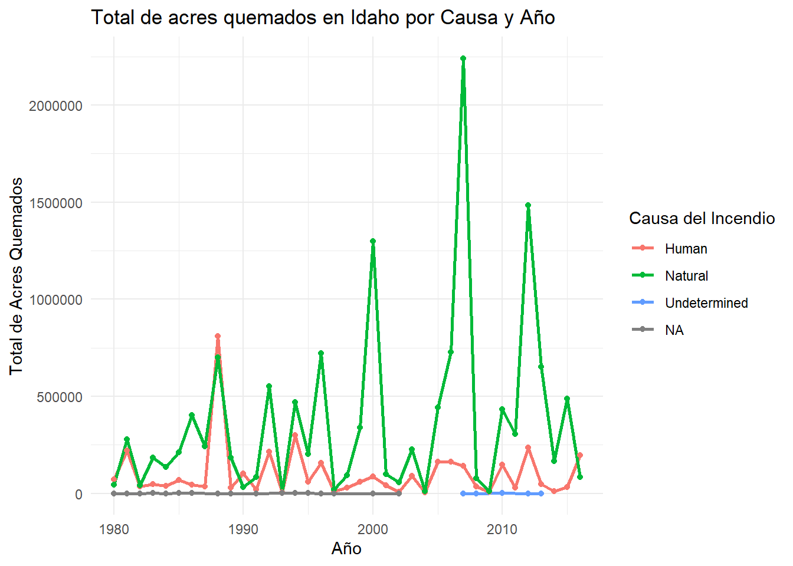

Ejercicios
2026-08-15
1 Ejercicio 1
A partir del dataset df, el cual trata de los incendios forestales, realice las siguientes tareas:
- Filtrar los registros para incluir únicamente los incendios ocurridos en el estado de Idaho.
- Seleccionar únicamente las columnas YEAR_, CAUSE y TOTALACRES.
- Renombrar estas columnas con nombres más claros y descriptivos.
- Agrupar la información por CAUSE y YEAR_.
- Resumir el total de acres quemados para cada combinación de causa y año.
- Elaborar una visualización que muestre los resultados de manera clara.
## ── Attaching core tidyverse packages ─────────────────────────────────────────────────────────────────────────────────────── tidyverse 2.0.0 ──
## ✔ dplyr 1.2.1 ✔ readr 2.2.0
## ✔ forcats 1.0.1 ✔ stringr 1.6.0
## ✔ ggplot2 4.0.3 ✔ tibble 3.3.1
## ✔ lubridate 1.9.5 ✔ tidyr 1.3.2
## ✔ purrr 1.2.2
## ── Conflicts ───────────────────────────────────────────────────────────────────────────────────────────────────────── tidyverse_conflicts() ──
## ✖ dplyr::filter() masks stats::filter()
## ✖ dplyr::lag() masks stats::lag()
## ℹ Use the conflicted package (<http://conflicted.r-lib.org/>) to force all conflicts to become errors## Rows: 439362 Columns: 14
## ── Column specification ───────────────────────────────────────────────────────────────────────────────────────────────────────────────────────
## Delimiter: ","
## chr (10): ORGANIZATI, UNIT, SUBUNIT, SUBUNIT2, FIRENAME, CAUSE, STARTDATED, CONTRDATED, OUTDATED, STATE
## dbl (4): FID, YEAR_, STATE_FIPS, TOTALACRES
##
## ℹ Use `spec()` to retrieve the full column specification for this data.
## ℹ Specify the column types or set `show_col_types = FALSE` to quiet this message.df_idaho <- df_csv %>%
filter(STATE == "Idaho") %>%
select(YEAR_, CAUSE, TOTALACRES) %>%
rename(Año = YEAR_, Causa = CAUSE, Acres_Quemados = TOTALACRES) %>%
group_by(Causa, Año) %>%
summarise(Total_Acres = sum(Acres_Quemados, na.rm = TRUE), .groups = 'keep') -> resumen
knitr::kable(resumen)| Causa | Año | Total_Acres |
|---|---|---|
| Human | 1980 | 71974.70 |
| Human | 1981 | 219362.40 |
| Human | 1982 | 34016.20 |
| Human | 1983 | 48242.50 |
| Human | 1984 | 36837.80 |
| Human | 1985 | 68035.30 |
| Human | 1986 | 43180.90 |
| Human | 1987 | 35128.40 |
| Human | 1988 | 810403.30 |
| Human | 1989 | 28021.60 |
| Human | 1990 | 103058.60 |
| Human | 1991 | 19940.40 |
| Human | 1992 | 212782.80 |
| Human | 1993 | 4113.10 |
| Human | 1994 | 299453.50 |
| Human | 1995 | 58544.50 |
| Human | 1996 | 156216.60 |
| Human | 1997 | 9484.10 |
| Human | 1998 | 28840.80 |
| Human | 1999 | 59034.70 |
| Human | 2000 | 87020.00 |
| Human | 2001 | 40137.30 |
| Human | 2002 | 7124.80 |
| Human | 2003 | 90178.59 |
| Human | 2004 | 4253.56 |
| Human | 2005 | 163203.90 |
| Human | 2006 | 161153.42 |
| Human | 2007 | 141901.02 |
| Human | 2008 | 35992.38 |
| Human | 2009 | 8585.01 |
| Human | 2010 | 147976.25 |
| Human | 2011 | 28263.53 |
| Human | 2012 | 234407.37 |
| Human | 2013 | 47218.65 |
| Human | 2014 | 11445.90 |
| Human | 2015 | 32997.03 |
| Human | 2016 | 195300.04 |
| Natural | 1980 | 42938.20 |
| Natural | 1981 | 276593.30 |
| Natural | 1982 | 42156.90 |
| Natural | 1983 | 185028.00 |
| Natural | 1984 | 136350.30 |
| Natural | 1985 | 211339.40 |
| Natural | 1986 | 401165.40 |
| Natural | 1987 | 240241.30 |
| Natural | 1988 | 700425.00 |
| Natural | 1989 | 183894.20 |
| Natural | 1990 | 33298.30 |
| Natural | 1991 | 83657.10 |
| Natural | 1992 | 550655.80 |
| Natural | 1993 | 874.70 |
| Natural | 1994 | 469404.30 |
| Natural | 1995 | 202926.00 |
| Natural | 1996 | 722663.20 |
| Natural | 1997 | 21234.80 |
| Natural | 1998 | 93933.10 |
| Natural | 1999 | 340060.60 |
| Natural | 2000 | 1298968.00 |
| Natural | 2001 | 99515.40 |
| Natural | 2002 | 56367.60 |
| Natural | 2003 | 225878.98 |
| Natural | 2004 | 12080.87 |
| Natural | 2005 | 441794.53 |
| Natural | 2006 | 728637.48 |
| Natural | 2007 | 2241038.02 |
| Natural | 2008 | 77631.90 |
| Natural | 2009 | 10354.30 |
| Natural | 2010 | 433878.71 |
| Natural | 2011 | 306059.62 |
| Natural | 2012 | 1484690.01 |
| Natural | 2013 | 652231.11 |
| Natural | 2014 | 165935.70 |
| Natural | 2015 | 488426.03 |
| Natural | 2016 | 83523.56 |
| Undetermined | 2007 | 0.30 |
| Undetermined | 2008 | 0.50 |
| Undetermined | 2010 | 1801.00 |
| Undetermined | 2012 | 0.10 |
| Undetermined | 2013 | 0.60 |
| NA | 1980 | 50.00 |
| NA | 1981 | 43.00 |
| NA | 1982 | 4.00 |
| NA | 1983 | 300.00 |
| NA | 1984 | 10.00 |
| NA | 1985 | 866.00 |
| NA | 1986 | 161.00 |
| NA | 1988 | 31.00 |
| NA | 1989 | 60.00 |
| NA | 1991 | 0.00 |
| NA | 1993 | 840.00 |
| NA | 1994 | 943.20 |
| NA | 1995 | 218.10 |
| NA | 1996 | 6.20 |
| NA | 1997 | 0.80 |
| NA | 2000 | 29.00 |
| NA | 2002 | 0.10 |
# 2. Elaborar la visualización
ggplot(df_idaho, aes(x = as.numeric(Año), y = Total_Acres, color = Causa)) +
geom_line(size = 1) +
geom_point() +
labs(title = "Total de acres quemados en Idaho por Causa y Año",
x = "Año",
y = "Total de Acres Quemados",
color = "Causa del Incendio") +
theme_minimal()## Warning: Using `size` aesthetic for lines was deprecated in ggplot2 3.4.0.
## ℹ Please use `linewidth` instead.
## This warning is displayed once per session.
## Call `lifecycle::last_lifecycle_warnings()` to see where this warning was generated.